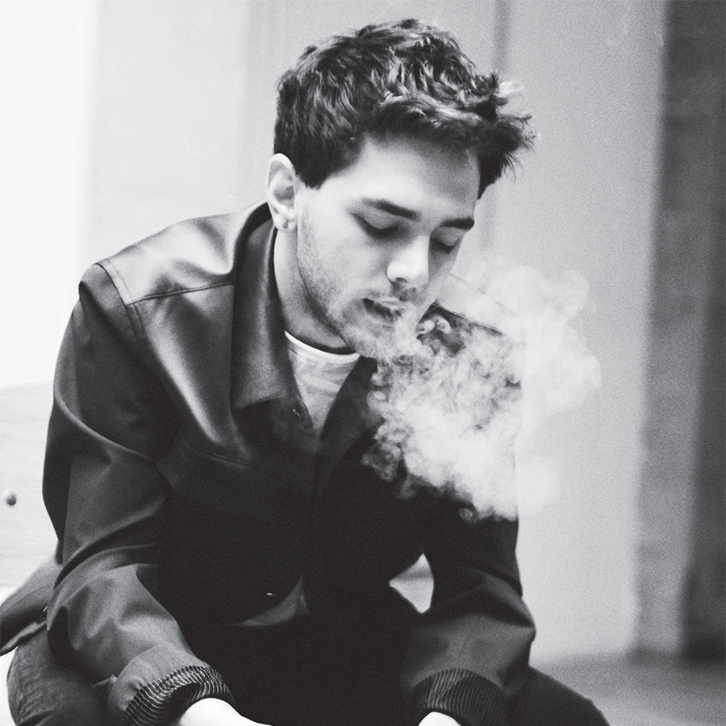

|  |
Xavier Dolan è un regista, sceneggiatore, attore, montatore, costumista, produttore cinematografico, scenografo e doppiatore canadese.
Figlio di un attore e cantante e di un’insegnante, Dolan esordisce molto giovane nel mondo dello spettacolo, grazie alla sua partecipazione a diversi spot pubblicitari e ad alcuni prodotti televisivi.
Nel 2008, ottiene un ruolo di rilievo nel film horror “Martyrs” di Pascal Laugier.
Nel 2009 debutta alla regia a soli 19 anni, con il film “J’ai tué ma mère”. Vince tre premi e si guadagna l’appellativo di enfant prodige del cinema. Inizia la collaborazione con l’attrice Anne Dorval. Riceve anche una nomination ai premi César per il miglior film straniero. Oltre a essere regista e attore protagonista del film, Xavier Dolan ne cura la sceneggiatura, i dialoghi, la produzione, i costumi e la colonna sonora. La supervisione in tutti gli ambiti della produzione diventa una costante dei film di Dolan.
Nel 2010, Dolan partecipa ancora a Cannes, nella sezione Un certain regard, con la commedia sentimentale “Les Amours imaginaires”: vince un premio e, poi, riceve un’altra nomination ai César. Dolan è di nuovo a Cannes nel 2014 e corre per la prima volta per la Palma d’Oro con il film “Mommy”: vince il premio della giuria. Riceve un César per il miglior film straniero e raggiunge la grande notorietà internazionale.
Dolan è anche regista di videoclip musicali. Tra i più celebri, c’è quello del brano “Hello” della cantante britannica Adéle.
Nel luglio 2023 annuncia il suo ritiro dal mondo del cinema come regista, deluso dai riscontri e dalle critiche sui suoi ultimi lavori e definendo il tutto "una perdita di tempo".